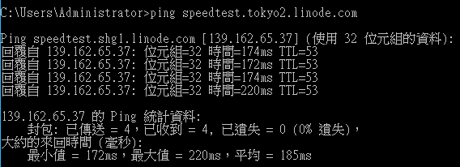
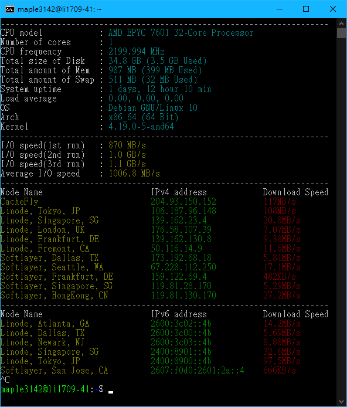
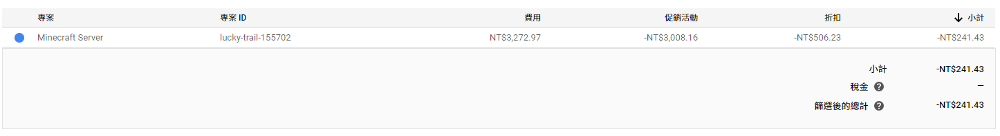
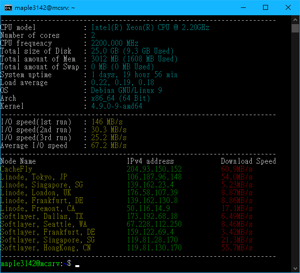
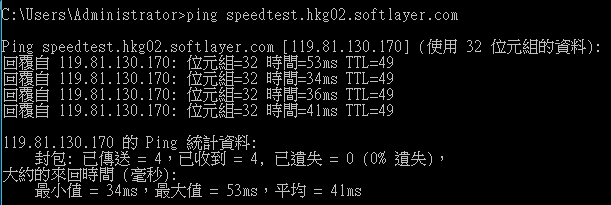
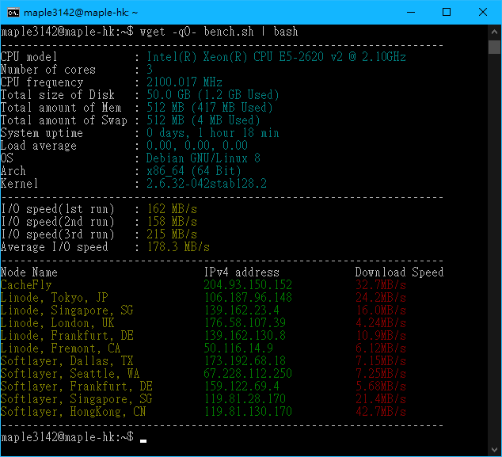

本文會不斷的根據我的體驗來更新，評價也都是很主觀的
前言
我開始研究 VPS 是從開始使用 GCP 的一年 300USD 免費體驗開始的，目前(2019/07)在上面用它的 Cloud Compute 於台灣機房架了 Minecraft 伺服器
不過我發現 GCP 的價格相當的昂貴，那 300USD 的消耗速度相當的快，預計最多能撐 2~3 個月。因此我就順便研究了一下有沒有比較低價的 VPS (最好能試用)能開 Minecraft 伺服器
Linode
這家算是相當有名的一家 VPS，價格最低的有 5USD 的，在亞洲有日本、新加坡與印度可選
目前(2019/07)使用 podcastinit2019 為 Promo Code 去註冊可以拿到 20USD 的額度來用，可用期限到年底
點此註冊 (有我的推薦)
我目前主要有把我先前架設的 BDTCS 貼吧雲簽到系統 移動到這邊的 5USD/Month 日本 VPS，在上面放熊貓網的 Hentai@Home 以及架 Outline VPN
到目前為止我的體驗都還蠻不錯的，網路穩定快速、客服品質也很好，蠻值得使用下去的。不過要注意的是它的日本機房從台灣 Ping 過去的效果不是很好，基本上只適合放網站而不適合當 Minecraft server

Benchmark
wget -qO- bench.sh | bash

Google Cloud Platform: Cloud Compute
這個和其他普通 VPS 比起來價格相當的貴，不過促使我去使用它的原因是因為有免費的 300USD 以及台灣機房 (ping~20)
我有在上面開 (4CPU+4GB RAM+50GB SSD) 的主機兩個禮拜左右，後來覺得因為伺服器玩的人沒很多所以把它降到 (2CPU+3GB RAM+25GB SSD) 的規格了。GCP 可以讓你很自由的升/降級 RAM 和 CPU，但 SSD 不行，所以我是另外開一台 VM 然後用 rsync 把伺服器資料轉過去才成功降級的。
這個是目前的花費: (兩周高級版+兩天降級後的伺服器)

Benchmark
wget -qO- bench.sh | bash

HostHatch
這家的名氣相對於前面兩家小非常多，不過我認為它的價格相當的實惠，便宜又大碗，還有香港的機房可以選
點此註冊 (有我的推薦)
它有分三種主機可以選，KVM OpenVZ Storage，前兩個都是 SSD 的，但 OpenVZ 便宜比 KVM 便宜不少(原因可以 Google 一下)。而後面的 Storage 使用的是 HDD，不過空間也給很大，比較適合拿來放備份的東西，或是架設 Nextcloud 之類的雲端硬碟。
目前我是有購買它 4USD/Month 的 OpenVZ 主機，主要是要拿來掛 Hentai@Home 賺 Hath 用的，因為它的空間和流量大小都比 Linode 5USD/Month 好
另外，這家值得一提的是它從台灣去的 Ping 蠻低的，我覺得算是可以架遊戲伺服器的考慮之一

Benchmark
wget -qO- bench.sh | bash
